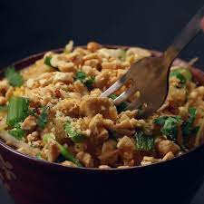

One-Pot Pad Thai

Easy Pad Thai
A new spin on a classic Thai dish. This iconic recipe can easily be recreated at home. You can
adjust parts of the recipe to your liking (e.g. use shrimp or tofu instead of chicken). This
recipe serves 4.
Ingredients
- 8 oz pad thai noodle (250 g), or noodles of your choice
- 2 tbsp sesame oil, divided
- 2 eggs
- 1 chicken breast
- 1/4 cup shallot (25 g)
- 3/4 cup pad thai sauce (175 mL)
- 1 cup bean sprout (100 g)
- 1/2 cup peanuts (65 g), crushed, plus more for garnish
- 1/4 cup green onion (25 g), plus more for garnish
- 1/4 cup fresh cilantro (10 g), plus more for garnish
Steps
- Cook the noodles according to the package instructions.
- Toss with 1 tbsp of seasme oil and set aside.
- Add 1/2 tbsp of sesame oil to a pot with the lightly beaten eggs. When the eggs are finished
cooking, set aside.
- Pour the remaining 1/2 tbsp of sesame oil into the pot and add the diced chicken breast.
Cook until no longer pink in the middle, then set aside.
- Add the shallots to the pot and cook unitl lightly browned and fragrant. Then, add the noodles,
eggs, and chicken back into the pot.
- Pour in the Pad Thai sauce and toss to coat.
- Top with the bean sprouts, crushed peanuts, green onions, and cilantro, and stir until well
blended.
- Dish up and garnish with extra peanuts, green onions, and cilantro.
- Enjoy!
Back to home page